在2018年国际计算机体系结构研讨会（ISCA）上，John Hennessy和David Patterson发表了图灵奖演讲：《计算机体系结构的新黄金时代》。
1980年代Hennessy和Patterson做图灵奖研究时，单线程CPU性能每年增长52%。到2018年，随着摩尔定律和Dennard Scaling终结，这个速率降到3%。
需要领域专用架构（DSAs）。他们的工作示例是谷歌的TPU v1，已投入生产：神经网络推理吞吐是CPU的29倍，能效好80倍。结尾预测：「未来十年将看到新颖计算机体系结构的寒武纪大爆发。」
这个预测成真了。今天有几十种架构在认真开发：GPU、TPU、LPU、NPU、DPU、ASIC、wafer-scale engines、可重构dataflow、神经形态、光子、模拟。特别是，这些架构都聚焦AI计算。
真正赢得实际部署的架构：GPU（NVIDIA、AMD）、systolic-array加速器（TPU、Trainium）、Cerebras Wafer-Scale Engine、Groq LPU。
NVIDIA是明确领跑者；AMD紧随其后，OpenAI和Meta都给了6 GW的承诺。TPU训练Gemini并将用最多一百万颗芯片服务Anthropic；Anthropic也在超过一百万个Trainium芯片上跑Claude。Cerebras现在服务OpenAI推理；Groq LPU通过200亿美元的acquihire并入NVIDIA。
这篇文章旨在调研这些不同路线：它们的*哲学*、*架构*、*扩展方法（scale-up和scale-out）*、*软件栈（如何编程这颗芯片）*。
AI计算被矩阵乘法主导。transformer是一串matmul：Q/K/V projection、attention、output projection、FFN：穿插element-wise操作：normalisation、activation、residual adds。训练前沿模型执行10²⁵ 次乘加操作。
matmul的*形状*取决于工作负载。Training把一批序列推过每层，反向传播loss并更新权重，一次有数千token流过同一权重矩阵。Prefill是推理的prompt摄入阶段：完整输入序列在首个输出token产生前单次投影过模型。两者都把许多token叠在同一权重矩阵上，所以每层的数学是大的矩阵-矩阵乘（GEMM），算术强度高（compute-bound）。
Decode是自回归：模型一次一个token地输出，每个都依赖之前所有token，token N+1必须等token N产生。每步只投影一个token，所以每个matmul变成矩阵-向量积（GEMV）。产生一个token需要完整扫过模型每个权重，加上完整读KV Cache做attention。算术强度比prefill掉几个数量级。
推理系统通过batching token恢复部分强度，把GEMV升回GEMM：continuous batching堆叠许多用户的decode步，speculative decoding每请求堆K个drafted token并一次验证，multi-token prediction在模型内部折叠同样的技巧。对continuous batching，每个用户请求仍读自己的KV Cache，所以长上下文decode从weight-bandwidth-bound转为KV-bandwidth-bound。
这里的架构问题是把数字搬到matmul足够快发生的地方。这被称为memory wall：计算指数扩展，内存带宽没有。
每个架构提出不同的数据移动策略。理解一颗芯片归结为四个问题：*数据住在哪、如何搬到计算单元、计算单元长什么样、芯片在规模下如何互相通信*。
NVIDIA GPU是海量并行处理器。哲学是：一个有数千线程、由host CPU编排、通过CUDA暴露的可编程芯片，是跑*可并行*负载的正确机器。每代在可编程的Streaming Multiprocessors上加加速原语而不改变编程模型。同一颗芯片训练transformer、服务推理、渲染图形、跑科学模拟（加速计算）。
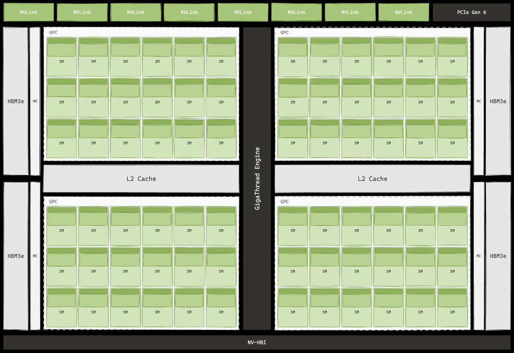
架构：NVIDIA GPU是一组吞吐导向核心 + 深内存层级保持其喂饱 + 刚好够的调度硅让数千线程在途。核心是Streaming Multiprocessors（SM），每封装复制100+ 个：V100 80、A100 108、H100 132、B200 148、B300 160、Rubin 224。每个SM内是同样的配方：四个SM Sub-Partitions，各有自己的warp scheduler、dispatch unit、16k×32-bit寄存器文件、标量CUDA Core lane、做超越函数的Special Function Unit、以及通往SM Tensor Cores的私有端口。四个partition共享L1/shared-memory块和TMA。线程按32的warp分组以SIMT lock-step执行；每partition数十个驻留warp让scheduler通过切换隐藏内存/算术停顿。
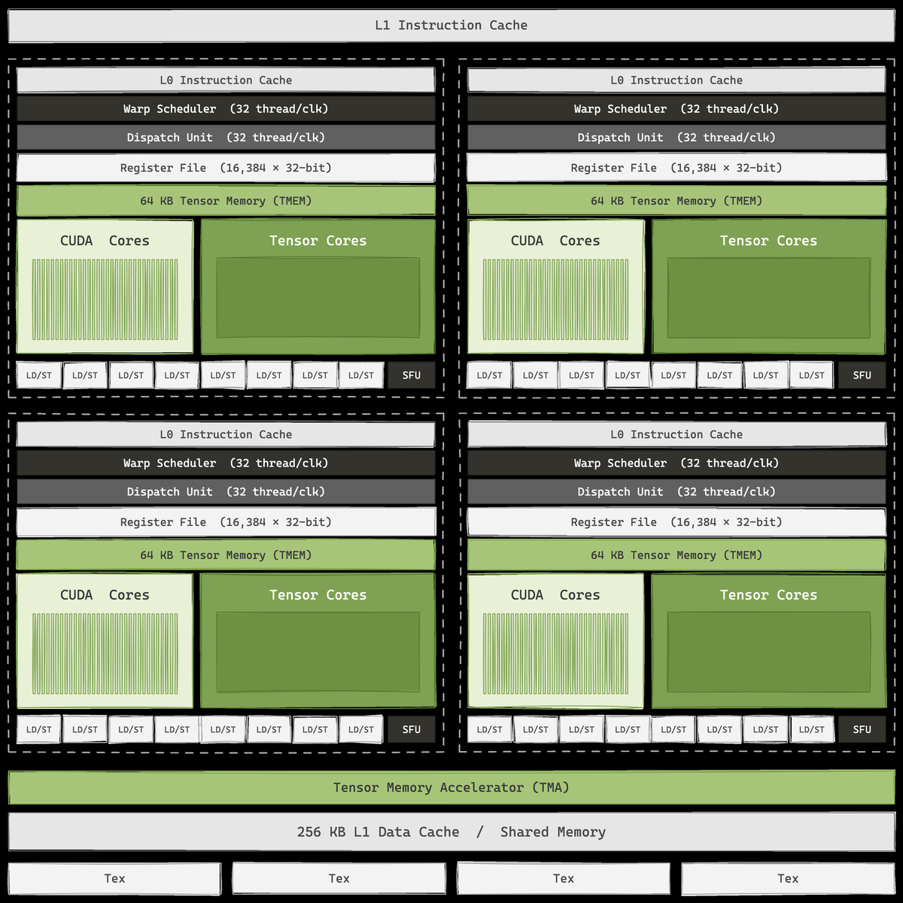
Compute：Tensor Core：CUDA Cores处理一切非matmul的东西（激活、残差加、归一化、地址算术）。但transformer块约99% 是matmul FLOPs，所以压倒性计算吞吐来自Tensor Cores。
Tensor Cores在小矩阵块上执行fused matrix multiply-accumulate，D=A·B+C。完整matmul切成输出块：内核走共享内维K，从左侧输入矩阵行条取A、右侧列条取B，把每个部分积折进运行累加器。块形状写为M×N×K。累加器跨循环粘滞：每个MMA的输出D变成下一个的输入C，即C←A·B+C原地进行。
V100第一代单元（每SM 8个）跑warp级16×16×16 FP16 MMA。A100第三代加TF32、BF16、FP64 matmul和2:4结构化稀疏。H100第四代加原生FP8，把抽象从warp拉到warp group：128个协作线程在64×256×16形状发射异步wgmma，在后台运行。B200第五代更进一步：two-SM MMA 256×256×16，操作数跨一对SM拆分，原生FP4，每SM有专用256KB Tensor Memory（TMEM）scratchpad装累加器块。Rubin第六代扩展FP4吞吐、加原生FP6、配合第三代Transformer Engine做硬件自适应NVFP4微块缩放。
Warp Specialisation（Hopper时代惯用法）：一个块内，一些warp作producer发背靠背TMA加载；另一些作consumer对新到的块发wgmma。同步不再是旧SM级 __syncthreads()，而是mbarrier（共享内存中的内存屏障）和挂在TMA完成上的异步事务屏障。FlashAttention-3、CUTLASS ping-pong GEMM、Blackwell FA4 kernel都是同一配方：TMA驱动的producer流水线通过共享内存和TMEM喂wgmma consumer流水线。
Memory：片上级联是每级硬件管理缓存+软件提示层。片外是HBM：V100 32GB HBM2、H100 80GB HBM3、B200 192GB HBM3e、B300 288GB、Rubin 288GB HBM4。芯片级L2在HBM和SM之间：V100 6MB、A100 40MB、H100 50MB、B200 60MB（跨双die拆成两个30MB bank）。每SM内256KB统一L1/SMEM在kernel launch时在硬件管理L1和程序员控制scratchpad间划分。Blackwell加第五层：TMEM，每SM 256KB专给MMA累加器。
层级间移动已逐步从warp解耦。Ampere引入cp.async：逐线程异步复制HBM→SMEM完全绕过寄存器。Hopper用TMA替换：专用DMA引擎，一个线程提交多维tile descriptor（基址、leading dimension、swizzle），引擎处理所有地址算术。TMA支持cluster级multicast：一次HBM读扇出到thread-block cluster每个SM。Blackwell扩展TMA直接加载进TMEM。
Numerics：FP32是历史默认；Volta带FP16+FP32累加和loss-scaling；Ampere加TF32、BF16和2:4结构化稀疏（剪枝权重有效吞吐翻倍）。Hopper引入原生FP8（E4M3和E5M2）+ Transformer Engine逐层自动缩放激活。Blackwell用FP4精度再减半+microscaling MX格式（块级共享指数找回精度）+第二代Transformer Engine。Rubin第三代加NVFP4和原生FP6。芯片布局本身成为numerics故事：B100/B200/B300是两个reticle-limit die，由约10 TB/s NV-HBI缝合，对软件呈现为逻辑单GPU，封装8个HBM堆栈；Rubin扩展到双die约336 B晶体管 + 8个HBM4堆栈。每代把bit减半并用更细粒度缩放找回精度，买约2× 每瓦吞吐。
扩展有两个区域：scale-up和scale-out。带宽饥饿的collectives（tensor parallelism、MoE expert routing）留在scale-up域内；数据并行和流水线并行跨scale-out织网。
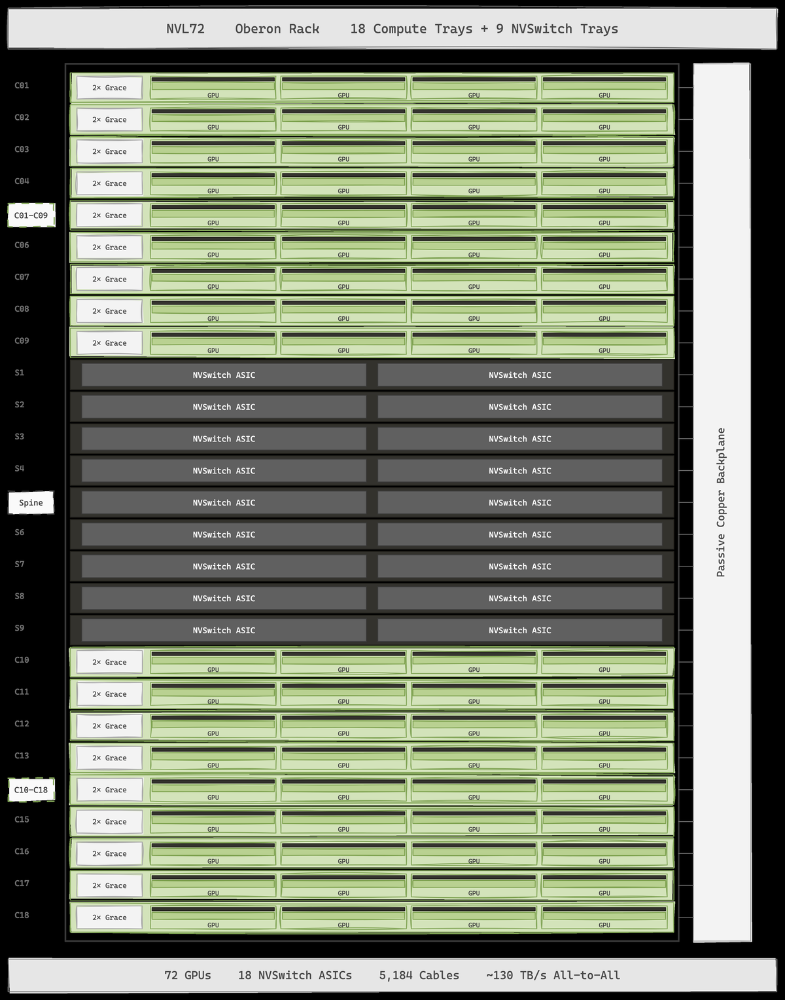
Scale-up是NVLink + NVSwitch。NVLink实现GPU间cache-coherent fabric。NVSwitch是每个GPU连的专用crossbar芯片，让每个GPU能以全NVLink带宽无阻塞all-to-all同时通信。它们定义了HGX 8-GPU baseboard。GH200 Grace Hopper用NVLink-C2C 900 GB/s把一颗Grace ARM CPU绑到一颗H100。Blackwell让配对成默认：GB200融合一颗Grace + 两颗B200；NVL72把36个缝进单一液冷scale-up域：72 GPU、36 Grace CPU、13.5TB HBM + 17TB LPDDR5X作为单一平坦连贯地址空间。Rubin两步走：NVL144 2026出货，NVL576（Kyber机箱）2027把144个四die Rubin Ultra封装进576 GPU die单一连贯域。
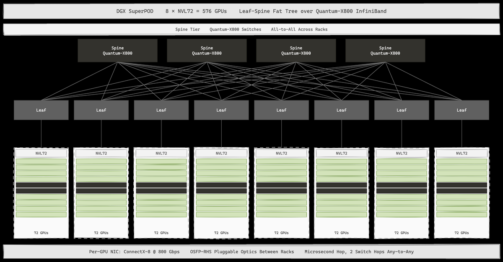
这种密度由无源铜维系。NVL72的NVLink fabric跑在5,184根blind-mated铜缆上（每机架约2英里布线、无in-cable retimer），跨72 GPU带约130 TB/s all-to-all。NVIDIA估计铜方案相对光等价物每机架省约20 kW。铜让「机架即一GPU」经济上可行：sub-2米跑程仍在功率、成本、每美元信号完整性上赢。
Scale-out来自Mellanox收购。scale-out fabric不连贯：节点保持独立地址空间，数据只通过软件发起的显式RDMA跨过，通常包装在NCCL collectives（all-reduce、all-to-all）里。参考集群是DGX SuperPOD：八个NVL72机架经Quantum-X800 InfiniBand缝成576 Blackwell GPU单一scheduler。Rubin Ultra 2027把配方放大一个数量级：Kyber机架各576 GPU die，经Quantum-X Photonics CPO缝接，数千GPU单一scheduler。
每个GPU有自己连进fabric的ConnectX NIC。Blackwell节点跑ConnectX-8 800 Gbps per GPU，比per-GPU NVLink低一个数量级，延迟从纳秒升到微秒。Rubin移向ConnectX-9 1.6 Tbps。铜到光的切换发生在机架边界：跨机架800 Gbps是光学。被动铜DAC在200 G/lane约1.5-2米到头。Rubin把光层折叠进switch ASIC：Quantum-X Photonics用co-packaged optics替换pluggable，NVIDIA声称约4× 更少激光器、约3.5× 更低链路功率。
NVLink Fusion最近开放scale-up fabric本身：第三方CPU和XPU可加入NVLink域，让hyperscaler建半定制机架。
CUDA是海量并行处理器的自然编程模型。你写一个kernel（每线程执行一次的代码）并跨数千线程按blocks和warps组织发射。这就是抽象十八年几乎没变、2007年以来写的每个CUDA kernel都能在Blackwell编译运行的原因。
这种连续性既是护城河也是约束。每代新硬件（Tensor Core、TMA、TMEM）以PTX和SASS intrinsics暴露在相同kernel-and-warps模型上：mma.sync、wgmma.mma_async等。NVIDIA不能激进重想SM，因为太多代码依赖它；作为回报，每笔CUDA软件投资跨代复利。
PTX之上是二十多年搭的栈：cuBLAS和cuDNN做数学和DNN原语；CUTLASS用模板C++ 编码数十年GEMM专长；TensorRT-LLM做paged attention、in-flight batching和speculative decoding；通过PyTorch、Triton和JAX绑定框架。
FlashAttention是现代AI最重要的算法重写之一，分块attention避免物化O(N²) 矩阵。其四代（FA1-FA4）各为最新NVIDIA硅手调（FA3为Hopper异步流水线、FA4为Blackwell），移植到其他硬件落后数月到数年。
这个栈大部分是NVIDIA不付钱的人写的。护城河不是CUDA本身；是二十年第三方kernels、库、工具，和数百万学会API的开发者。NVIDIA还把人类专长随硅片一起出货：在前沿实验室和hyperscaler团队内嵌数十名自家工程师，为每个新模型架构写kernel。切换出NVIDIA不仅是重写kernel和库：是重训整个工程队伍的思维模型，并失去今天坐在楼里的NVIDIA工程师。
TPU是矩阵乘法机器。哲学是，与其做可编程芯片，不如聚焦单一原语（大型systolic array上的稠密矩阵乘法），让XLA编译器提前规划每周期和每个字节内存。没有硬件scheduler、没有缓存、没有线程/warp。每代扩展pod，数千芯片经ICI互连连成一台连贯机器。TPU无渲染图形或科学模拟的野心；它存在的目的是比任何通用替代更高效每瓦地训练和服务Google的负载（搜索、翻译、推荐、Gemini）。
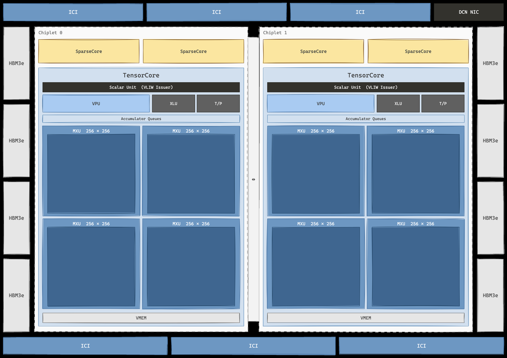
架构：TPU芯片是裹在刚好够喂饱它的硅里的matmul引擎。计算单元是TensorCore：旗舰芯片v2起每封装两个；效率调优芯片（v4i、v5e、v6e）一个。每个TensorCore内是同样的五组件配方：一个或多个MXU做矩阵数学、VPU做element-wise、Scalar Unit掌控全场、XLU做跨lane归约、外加Transpose/Permute Unit和喂排MXU的累加器队列。v4起每芯片还有TensorCore外的专用SparseCore dataflow引擎。每块坐在单VLIW issue plane上，由Core Sequencer驱动，每周期填满322-bit bundle的八个功能槽。没有指令缓存未命中、没有warp scheduler、没有乱序引擎、没有分支预测器：编译器是调度器，省下的硅面积花在更多MAC上。
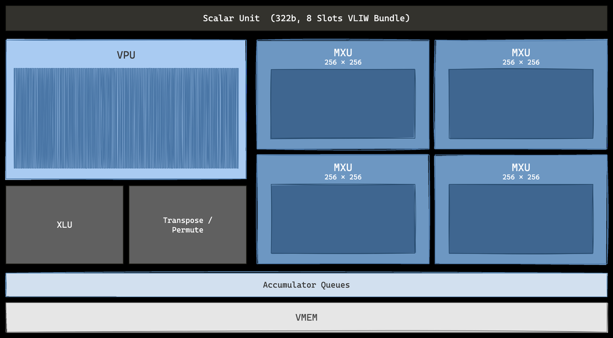
MXU是systolic array。v1发一个256×256 INT8推理阵列；v2是首个可训练TPU，引入128×128单元做BF16乘FP32累加。每TensorCore单元数增长：v2 1个 → v3 2 → v4/v5e/v5p 4。Trillium回到256×256（每阵列每周期65,536乘加单元），Ironwood、8t、8i都保持256×256形状。
算C=A×B时，矩阵B的值预加载进每个cell（weight-stationary dataflow，TPU区别于别处output-stationary阵列的选择）。激活从左边进入，每周期传播一列，在每个cell与驻留权重相乘，部分和向下流进底部累加器队列。数据进阵列后无内存访问：每个权重对每个经过的激活复用，每个激活跨行复用128（或256）次。数据复用焊进硅里，而非由缓存仲裁。权衡是underfill：256×256阵列上128×128 matmul浪费75% 硅，所以XLA把维度分块、填充、调度到128（或256）的倍数。
VPU是第二计算引擎但微观架构上更有趣：每个TPU是2D向量机，不是1D SIMD。VPU寄存器文件持2D VREGs。v4/v5p形状是 (8,128)：128 lane宽、8 sublane深，每core 32（v4）或64（v5p）寄存器，每 (lane,sublane) 有4个独立FP ALU。现代TPU程序大部分加速来自VPU/MXU overlap：量化、layernorm、softmax、激活、bias-add都在MXU背后跑matmul的同周期跑在VPU。跨lane归约由XLU处理（慢、贵、已知编译器热点）。Transpose/Permute Unit吸收布局变换。
Scalar Unit最小但最举足轻重：单线程双发射整数ALU，32个32-bit寄存器 + 4 KiB SMEM装控制状态，配Imem装程序。它是唯一做指令取指的块；每周期拉322-bit VLIW bundle，本地执行两个标量槽（地址算术、循环计数、分支、sync-register检查），把其余六槽分发到芯片其余部分：2向量ALU（VPU）、2向量load/store（HBM↔VMEM DMA）、2矩阵（push/pop MXU队列）。块间同步显式：sync flags跟踪MXU和VPU流水线何时忙，编译器插入屏障检查而非硬件跟踪依赖。
Memory：片上内存层级与计算侧同想法：没有缓存，每级软件管理。片外HBM（v2/v5e 16GB、v3/v4/v6e 32GB、v5p 95GB、Ironwood 192GB、v8代216-288GB）。片上最近计算的是VMEM，向量scratchpad喂VPU和MXU输入队列，v4 32MiB、v5e 128MiB、v8i拉到384MiB恰为装整个KV cache。之上CMEM（v4引入128MiB）：HBM和VMEM之间较慢较大的SRAM暂存。Scalar Unit有自己的SMEM。程序里每个tensor在编译时钉到一个层级；XLA的buffer-assignment pass跨层调度DMA。硬件不做预取、逐出、一致性；编译器对了阵列永不停顿，错了没有回退路径。
SparseCore是打破systolic模具的TensorCore外块（v4引入）。推荐和排序模型活在embedding查询上（数十亿索引进巨大表），访问模式是稠密matmul的逆：不规则、间接、all-to-all。256×256 systolic array恰好是错误形状。SparseCore是有16个compute tiles和专用SPMEM scratchpad的dataflow处理器，吸收scatter、gather、segmented-reduce和碎片embedding表产生的数据依赖all-to-all流量。对embedding重模型5-7× 加速，约5% die面积和功率。v8i（Zebrafish）推理芯片移除SparseCore，在I/O chiplet上换CAE（Collectives Acceleration Engine）：不同问题（自回归decode期间的collective归约），同想法（从主core切出小加速器吸收systolic array形状不对的负载）。
Numerics：TPU v1纯INT8推理；v2换BF16作规范训练格式。v4重引入原生INT8。Ironwood加原生FP8（E4M3和E5M2）约2× BF16吞吐。v8加原生FP4 + MXU内部block-scale乘法。Stochastic rounding在每个现代TensorCore硬件支持：低位尾数位作为概率做舍入决策，跨长训练保留低精度累加的期望值，是让BF16/FP8逼近FP32精度的小细节之一。
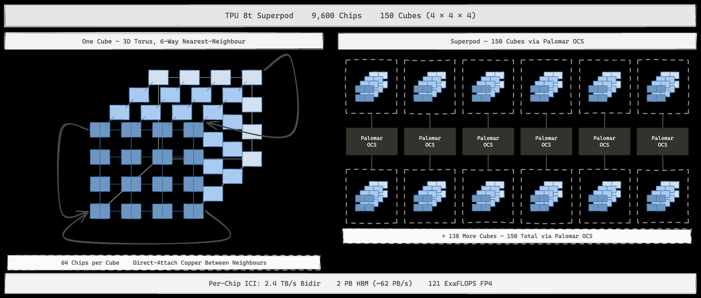
Scale-up：TPU的scale-up故事是NVIDIA的逆。Google的ICI是message-passing：无remote-load语义、无缓存一致性、无crossbar。每多芯片操作都是XLA编译的显式collective。scale-up域不靠switch fabric而是torus（芯片直接连邻居带边wrap），机架边界由optical circuit switches缝接。per-chip ICI带宽从v2 ~250 GB/s扩展到Ironwood双向1.2 TB/s、v8t 2×。
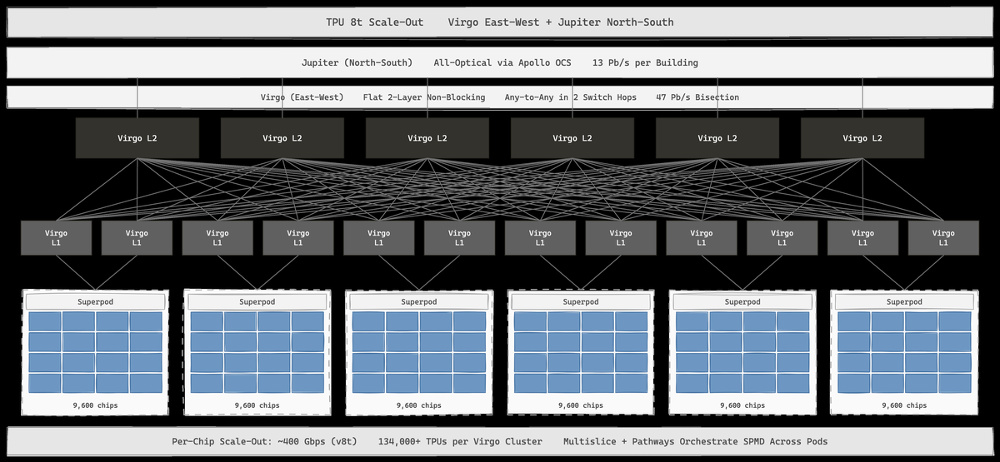
无NVIDIA对等物的是Palomar OCS：3D-MEMS光电路交换机，小镜子物理旋转把任何输入光纤映射到任何输出。v4 superpod用48个Palomar把64个cube（4,096芯片）连成一个3D torus。重配置是毫秒级不是纳秒，但没关系，因为OCS是circuit-switched：开工时选拓扑跑一周再重配。三个问题折叠进一个组件：每负载拓扑重配置、按需sub-pod切片、容错（芯片死时OCS光交换进备用cube，运行继续不丢ICI域）。
superpod是scale-up单位：相当于NVIDIA的NVL72，大两个数量级。v4 4,096芯片；v5p 8,960；Ironwood 9,216芯片（144个64-chip cube），呈现1.77 PB HBM（~68 PB/s）和42.5 ExaFLOPS FP8单一连贯ICI域。TPU 8t（Sunfish）到9,600芯片、2 PB HBM、121 ExaFLOPS FP4。TPU 8i（Zebrafish）1,024芯片，用新Boardfly分层高radix拓扑（4-chip ring → 8-board group → OCS连的up-to-36 groups），all-to-all延迟减半：专为MoE推理设计（3D torus对all-to-all有16-hop diameter，Boardfly压到7）。
Scale-out：TPU v7前scale-out跑单一fabric：Jupiter，2022年起spine全光（Apollo OCS，与Palomar同3D-MEMS家族）。Jupiter今天每building带13 Pb/s bisection。TPU 8t起scale-out拆成两个fabric：东西向TPU-to-TPU流量移向Virgo专用加速器fabric；Jupiter保留南北向角色（存储访问、通用计算、跨站扩展）。Virgo是平的双层非阻塞拓扑，高radix switch：每个TPU到任何其他最多两个switch。一个Virgo cluster连134,000+ TPU 8t 47 Pb/s bisection。
软件：TPU栈是compiler-driven，CUDA是kernel-driven。开发者用JAX写数值程序，XLA负责下面一切：哪些操作融合、每个tensor住哪、如何跨2D向量寄存器布局、HBM到VMEM的DMA何时发、322-bit VLIW bundle如何调度、程序如何跨数千芯片分片。无硬件回退：没有warp scheduler、缓存、乱序引擎掩盖坏调度。编译路径JAX → JAXpr → StableHLO → HLO → LLO → VLIW bundles。多芯片执行是SPMD，由GSPMD（正被Shardy替代）发射。Pallas是逃生舱：JAX的kernel写作语言，大致是GPU上Triton的TPU对等物。与CUDA相比TPU生态集中而非蔓延：框架以下几乎全由Google自己开源（XLA、JAX、Flax、Optax、Pallas、MaxText、Pathways、Shardy、Mosaic），与硅片同步演进。哲学两极仍然真实：TPU上编译器是唯一重要的接口；GPU上编译器只是几个之一。
AMD Instinct GPU建立在与NVIDIA不同的赌注上：NVIDIA每代扩展每个SM能*做*什么，AMD自GCN（2012）以来保持Compute Unit保守，并把投资放进封装：自2021起每代HBM容量匹配或超越当代NVIDIA旗舰；首个3D-stacked数据中心GPU（CDNA 3）；首个连贯CPU+GPU APU（MI300A）；开放生态（ROCm、HIP、OCP MX、UALink）。
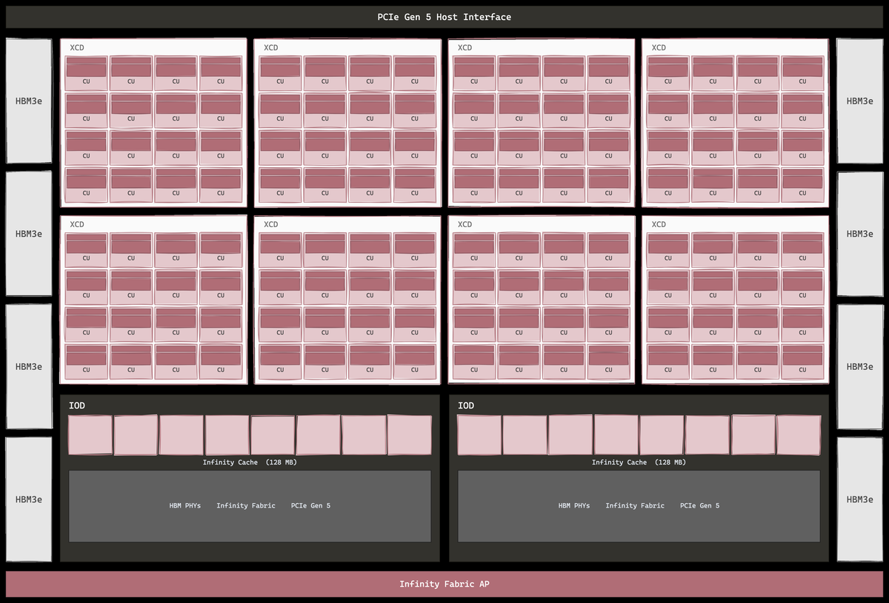
架构：AMD架构野心活在CU之间（多少颗能绑进单一连贯封装），而非SM内部。CU本身保守：四个16-lane SIMD、一个共享标量单元、64KB Local Data Share、L1向量缓存、per-SIMD VGPR文件 + CU共享SGPR池、以及（CDNA 1起）跑MFMA的Matrix Core。形状自2012年GCN没实质变过；扩展的是数量（MI100 120 CU、MI250X 220、MI300X 304、MI355X 256）和绑它们的封装。64线程wavefront在4周期流经16 SIMD lane，每SIMD多wavefront驻留让scheduler切换隐藏停顿。
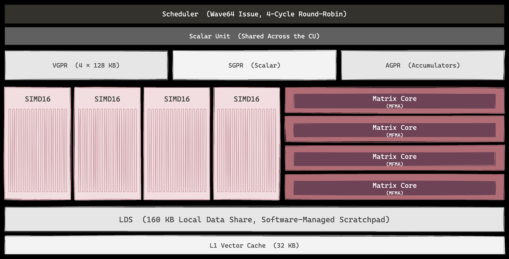
Compute：MFMA：NVIDIA Tensor Core爬线程层级（Volta 32线程warp、Hopper 128线程warp-group、Blackwell单线程+可选双SM cluster）。AMD Matrix Core停在原地。每代MFMA都是wavefront-scoped：一个wave64发单矩阵操作（V_MFMA_*），四个SIMD协作驱动它，操作数来自wavefront寄存器文件（A、B从VGPR，C、D通常从专用AGPR）。指令更快、格式集更宽，但发射器和范围没动。
两个成本：Divergence（半空wave64浪费32 lane对比半空warp32的16）；Overlap（NVIDIA异步descriptor驱动matmul解耦发射与执行，AMD wavefront-collective MFMA无对等物：发matmul的wave不能同时做有意义的向量工作）。对纯稠密GEMM（DGEMM）两者都饱和，async收益小：这些正是AMD历史上在exascale HPC领先的负载（Frontier上MI250X、El Capitan上MI300A）。但transformer attention（FlashAttention-3、FA4）把matmul与softmax、mask、KV-cache读交织，async overlap是那些kernel的整个结构：AMD必须手工重建流水线。
Memory：Infinity Cache：AMD通用层级比NVIDIA少，有一个NVIDIA完全没有的巨缓存。从CU向外：64KB LDS scratchpad、向量L1、per-XCD几MB L2。L2不跨XCD连贯；一致性发生在L2上一级。那级是Infinity Cache：MI300X 256MB分布四个IOD，16-way set-associative，实测约12 TB/s（MI300X 5.3 TB/s HBM的两倍多）。它起源于RDNA游戏GPU补偿窄GDDR bus；AMD在CDNA 3复用到AI，其中attention KV复用和权重复用异常适合大LLC。NVIDIA赌更大HBM带宽，AMD赌缓存。
片外HBM容量激进增长：MI100 32 → MI210 64 → MI250X 128 → MI300X 192 → MI325X 256 → MI355X 288 GB，自2021起每代匹配或超当代NVIDIA旗舰。赌的是推理负载越来越capacity-bound，内存更多的芯片赢。
Numerics：格式轨迹跟踪大家共享的精度减半模式：FP32→FP16→FP8→FP4，每步更细粒度缩放找回精度。AMD特有轴是开放性。CDNA 4的FP4和FP6用OCP MX block-scale乘法：与Blackwell的MXFP4和TPU v8的MXU相同格式，但由开放联盟（AMD、NVIDIA、Intel、Meta、Microsoft、Qualcomm、ARM）指定，AMD协助创立。MI355X里出货的格式与B200、TPU v8相同。CDNA 4转折：per-CU FP64吞吐减半：MI355X首先是AI芯片。
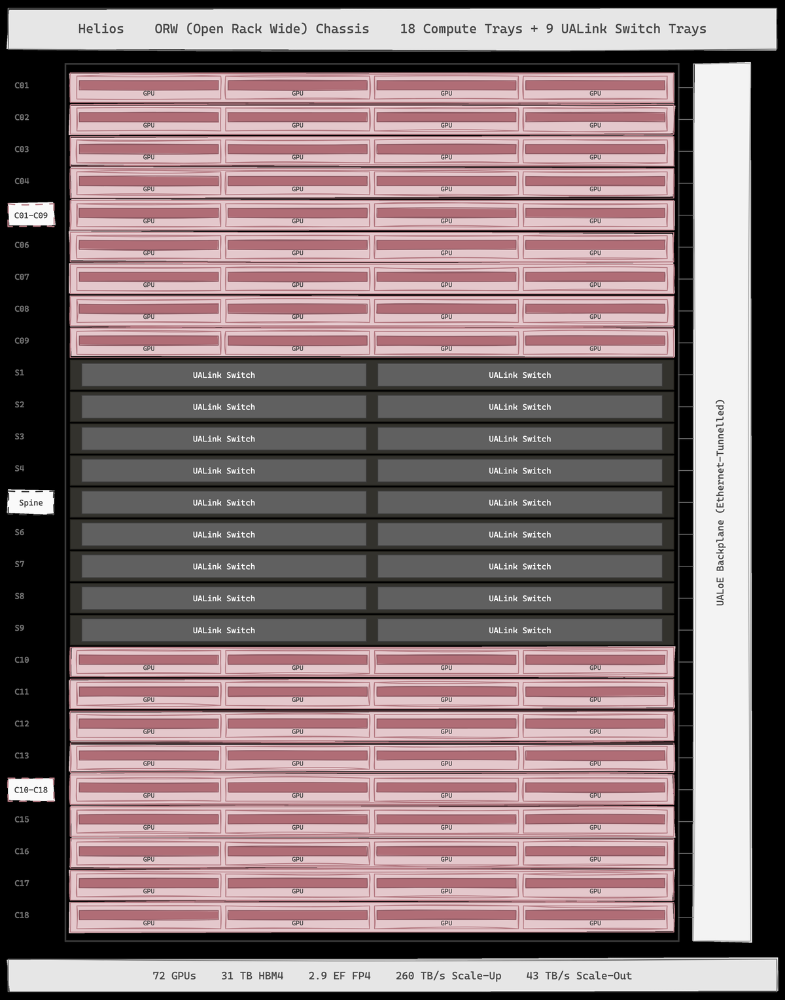
Chiplets：CDNA 1的MI100是单片7nm。CDNA 2的MI250X是AMD首个多芯片GPU。CDNA 3是改变一切的移动：八个XCD（TSMC N5，各约115mm²）经TSMC SoIC混合键合3D堆叠到四个I/O die（TSMC N6）。IOD带Infinity Cache、HBM3 PHY、Infinity Fabric链接、PCIe Gen 5；每个IOD上方两个XCD、旁边两个HBM堆栈。四个IOD由Infinity Fabric AP 4.8 TB/s bisection缝接，1530亿晶体管封装对kernel看起来像一颗GPU。NVIDIA保持单片到H100，B200才经2.5D CoWoS-L到两个reticle-limit die。AMD早一代到3D堆叠，per-die面积更小。
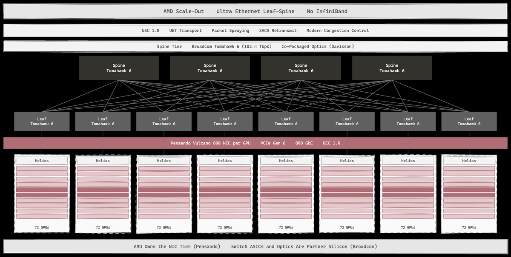
MI300A APU进一步推进：八个XCD中两个换成三个Zen 4 CCD，CPU和GPU共享一个由HBM3支撑的物理地址空间带硬件一致性。无host-device copy、无pinned memory、无PCIe在路径上。Zen 4核心和CDNA 3 XCD读同一页。NVIDIA的Grace-Hopper经NVLink-C2C桥*两个*封装；MI300A是*一个*。El Capitan（11,039节点4× MI300A）是证明它的部署。
Scale-up：到MI355X，AMD的scale-up是8-GPU OAM平台（Infinity Fabric上）。每个MI300X有7个IF链接，双向128 GB/s，全连接all-to-all中per-GPU mesh带宽896 GB/s。MI350X每链接153.6 GB/s（per-GPU ~1,075 GB/s）。平台符合OCP UBB 2.0：与NVIDIA HGX baseboard相同机械插座。AMD到MI355X没有的：NVL72的机架级对等物：Helios就是来补这个洞的。
Helios（2026下半年随MI455X出货）：72 GPU/机架、~31TB HBM4、1.4 PB/s聚合HBM带宽、2.9 ExaFLOPS FP4 / 1.4 ExaFLOPS FP8、260 TB/s scale-up带宽、43 TB/s scale-out。形态是Open Rack Wide（ORW）（Meta 2025 OCP提交，双宽液冷），不是AMD私有机箱。fabric是UALink：开放联盟标准AMD协助创立。UALink 200G 1.0定义200 GT/s lane、每方向800 Gbps，switched拓扑扩展到pod内1,024加速器。承诺是可比NVLink但无主的cache-coherent互连。
软肋：原生UALink switch硅2027年前不会量产。Astera Labs的Scorpio及Auradine、Enfabrica、Xconn都在瞄准2026末/2027部署。Helios发布时用UALoE（Infinity Fabric隧道过标准Ethernet）作临时方案。原生UALink switch随MI500 2027到来。发布时Helios更接近快速Ethernet隧道连贯cluster，而非NVL72的真cache-coherent NVLink域。
Scale-out：AMD不卖InfiniBand。整个scale-out栈是Ethernet，锚在另一个开放标准：Ultra Ethernet Consortium（UEC）。UEC 1.0定义Ultra Ethernet Transport（UET）：标准Ethernet上的新RDMA传输，带packet spraying、SACK选择性重传、现代拥塞控制。UET不是RoCEv2；是RDMA语义为scale-out AI fabric的干净重设计。NIC是Pensando（AMD 2022收购）。Vulcano 800 2026随MI455X：UEC 1.0合规、PCIe Gen 6、原生UALink接口。switch硅不是AMD的：Helios 43 TB/s跑Broadcom Tomahawk 6（102.4 Tbps Ethernet switch ASIC + co-packaged optics）。AMD拥有一个层（NIC+DPU），赌开放标准+最佳伙伴硅能超过垂直整合。行业已朝AMD移动：Dell'Oro报2025 Ethernet处理了AI scale-out fabric量两倍于InfiniBand。
软件：ROCm：ROCm是CUDA的开源对应物。栈底是HIP，AMD的CUDA兼容C++ runtime。hipify自动把CUDA源码翻译成HIP。批量HPC代码80-95% 开箱移植（CORAL-2数字）；现代AI kernel移植更差：任何够到Hopper/Blackwell特定原语（TMA descriptors、wgmma、tcgen05.mma）的没有干净ROCm对等物，得手写重写。库层一对一名镜像：rocBLAS对cuBLAS、hipBLASLt对cuBLASLt、MIOpen对cuDNN、RCCL对NCCL、Composable Kernel对CUTLASS。TensorRT-LLM无一方对应物；AMD押注vLLM开源服务引擎+AITER专用算子。
PyTorch路径是一等公民。torch.compile经Triton降低，Triton的ROCm后端已上游。随着Triton成为PyTorch默认kernel路径，大量移植成本蒸发：跑torch.compile的kernel在CUDA和ROCm都工作无需改源码。FlashAttention是承重案例：FA2经Composable Kernel在MI300X生产；FA3部分支持；FA4（2026年3月Blackwell）完全无ROCm移植。诚实差距仍在：独立基准（Phoronix，2026年3月）把ROCm 7.2放在标准PyTorch/vLLM/SGLang负载上比等价CUDA慢10-25%。ROCm 7达到feature parity而非perf parity。NVIDIA在frontier实验室内嵌工程师；AMD通过GitHub发kernel。
Cerebras建造史上最大芯片。哲学：memory wall是切晶圆的后果。fab在300mm硅上印数十颗die再锯开；行业随后把最异想天开的工程（HBM、NVLink、CoWoS、每机架5,184根铜缆）花在把这些碎块以片上带宽的一小部分重新接回去。Cerebras跳过锯。Wafer-Scale Engine是一片硅：84个reticle fields、46,225mm²、900,000个dataflow cores，片上内存每个字节SRAM距计算单元一周期。
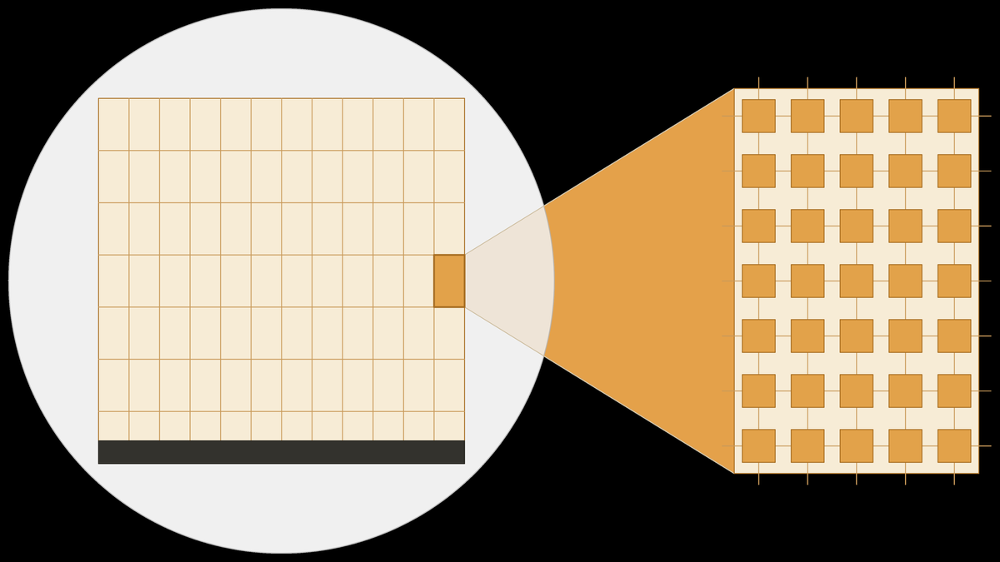
The Wafer：光刻机一次一个reticle曝光晶圆，每shot约850mm²，这就是每个传统芯片都活在该天花板下的原因（B200一碰到它就变两die）。Cerebras像TSMC任何其他客户一样印同样的 ~550mm² die 84次（12×7网格），然后与TSMC共同开发，在通常锯片会跑的<1mm scribe lines 上铺额外高层金属。网格在每道缝上以 source-synchronous 并行接口跨越（WSE-3 每 die 2,880 GB/s），整个 die 间层约花 97W。对软件缝隙不存在：一个均匀网格、一颗芯片。
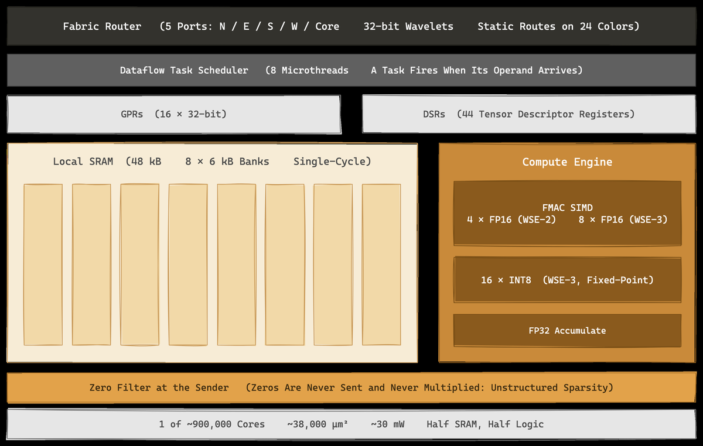
晶圆级以前试过，败在良率：单片晶圆计算机上单个缺陷杀死整片晶圆，这是1980年代埋葬该想法的原因。Cerebras的答案是粒度。H100上缺陷禁用整个 ~6mm² SM；WSE上同一缺陷禁用一颗0.05mm² core。WSE-3制造约970,000 core出货900,000：约7% 备用池 + 冗余fabric链接让硬件围绕每个缺陷重映射、恢复完整逻辑网格。
The Core：core不寻常的不是数据路径，是指令*是*什么。16个通用寄存器旁有44个data-structure registers（DSRs），各持一个tensor descriptor：基址、extent、stride，最多四维。指令用DSR命名操作数，所以单FMAC指令说「把到达流乘这个驻留tensor并累加进那个」，硬件按tensor持续时间流元素。软件循环不存在；循环活在descriptor里。NVIDIA花五代Tensor Core把matmul走向单descriptor驱动命令；WSE core上tensor指令没有其他形式。
每个core很小，WSE-2约38,000µm²，约半SRAM半逻辑，峰值30mW：48kB本地SRAM、16个通用寄存器、六级流水线、4-wide FP16 FMAC SIMD（WSE-3 8-wide）、五端口fabric路由器。执行是dataflow：core空闲直到wavelet到达，wavelet里控制bit选哪个handler task触发，八个硬件microthread随tensor操作数到达排空逐周期切换。无warp、无warp scheduler、无可错缓存、无重排缓冲：*数据到达即调度*。
Compute：wafer上没有矩阵单元。NVIDIA、Google、AMD都把FLOPs集中到专用matmul引擎（Tensor Core、MXU、Matrix Core）；Cerebras用fabric组装matmul。GEMM跑成整晶圆编排：每个到达权重沿一行持激活的core广播，每个core对驻留切片发乘加（每权重一次AXPY），部分和跨网格归约。数据复用来自几何：激活永不动，唯一在途操作数是被乘的那个。
FLOPs账本需要小心。WSE-3头条125 PFLOPS是稀疏FP16：假设硬件约8× zero-skipping在理想稀疏tensor上的收益。Dense约15.8 PFLOPS FP16（900,000 core × 8-wide FMAC × 1.1 GHz推导）。每瓦稠密FLOPs wafer输给每个当代GPU。wafer从来不是FLOPs机器；是带宽机器。Zero-skipping是dataflow发光处：零在发送端过滤，接收core永不见它永花周期：无结构化、element-granular稀疏，NVIDIA 2:4结构化稀疏采样的通用情形。但至今是未行使选项：Cerebras自己稀疏预训练结果（SPDF：75% 稀疏1.3B参数）是厂商署名、sub-7B，无旗舰客户模型披露为稀疏训练：Jais 2（平台上最大运行）是稠密。
Memory：层级是一层：core内48kB片里的44GB SRAM，wafer上别无他物。无HBM、无L2、无逐出策略；每字节距FMAC一周期。引用的带宽21 PB/s是900,000个本地SRAM端口的总和，on-wafer aggregate，不是point-to-point链接。诚实对比是bytes per FLOP：wafer每稠密FP16 FLOP可喂约1.3 bytes，B200从HBM得约0.002。在那条轴上每个GPU和TPU都饥饿；WSE是唯一平衡的机器。decode：纯带宽问题的阶段（每token一次完整读权重）：正是wafer形状适合的阶段。
wafer与外界连接是12×100 GbE：1.2 Tb/s，几乎不超单颗Blackwell GPU的一个ConnectX-8 NIC。on-wafer SRAM与off-wafer Ethernet之间隔五个数量级。NVIDIA的层级逐渐下降；WSE两层之间是悬崖。wafer是座岛，岛的超能力和牢笼是同一事实。
岛不生长。SRAM密度在领先节点已有效停止缩放：WSE-3相对WSE-2仅多10% SRAM，尽管完整节点shrink和晶体管数跳54%。逻辑持续缩小；六晶体管SRAM单元不。架构最稀缺的资源正是下一节点不再买的东西。
Weight Streaming（训练）：在wafer上训练倒置每个人想当然的流：GPU/TPU上权重驻留、激活流过；WSE上激活驻留、权重流过。主权重活在MemoryX，集群旁的DRAM-and-flash设备。逐层，权重流经wafer，对钉在SRAM的激活触发乘加，然后离开；梯度反向流回，优化器步在MemoryX里跑在CPU上。wafer从不存权重，「连临时都不」（Cerebras原话）。模型大小由MemoryX界定，不由44GB；44GB界定激活和batch。
买来的是编程模型。一片wafer装整层激活，所以无tensor parallelism、无pipeline parallelism、无FSDP分片：70B模型写成单设备程序，多系统扩展是经SwarmX（广播/归约树）的纯数据并行，把一条权重流扇到N片wafer并返回求和梯度。GPU训练主导的并行策略spreadsheet在Cerebras上没有页。
付的是规模，按市场自己的揭示偏好。规格表说2,048 CS-3；最大披露集群是64（Condor Galaxy 3）。平台上最大从零训练模型是Jais 2 70B参数2.6T token（锚客户G42训练，Cerebras工程师内嵌）。七年里没有任何人做过70B以上。MFU（GPU实验室35-45% 常发的数字）从未对任何Cerebras运行披露。
Inference：推理放弃weight streaming（算术致命：从MemoryX流70B模型140GB过约150 GB/s管每token约花1秒）。推理把权重停在SRAM，在layer边界跨wafer分片模型：Llama 70B在「至少四片」CS-3，pipeline-parallel over Ethernet。速度真实且独立验证：Artificial Analysis测Llama 3.1 8B 1,850 tokens/s、70B 446、Llama 405B 969（240ms first token）、Llama 4 Maverick 2025 2,522（约2.4× 当时最佳Blackwell数字）。没有GPU提供商在per-user decode速度上接近。
经济：44GB/wafer意味前沿规模模型吃整个舰队。SemiAnalysis估约24片CS-3跑1.6T参数级模型（GPU机架里几架就能装），每系统分析师估约 $450k BOM、list price约 $2-3M。decode期间wafer的巨大FLOPs大多闲置；per-token API定价约3-5× GPU提供商同开放模型。固定SRAM也给context定价：KV cache与权重共享44GB。MoE被服务但格式最坏情形。市场诚实定价了：2026年1月OpenAI签750 MW CS-3容量到2028，签约报超 $10B后涨超 $20B，wafer-scale获过的最大背书。该容量上首个旗舰是GPT-5.6 Sol（2026年7月发布，报价750 tokens/s）。
软件：栈compiler-driven像TPU，但通过更窄的孔径：Cerebras编译器是kernel matcher，不是通用代码生成器。cerebras.pytorch经lazy tensors把训练步trace进Torch-MLIR和图IR，然后匹配子图对手写kernel库，无匹配的op回退较慢自动生成。约束按GPU标准很刺眼：仅静态图、无动态形状、无数据依赖控制流、步中无eager tensor访问、PyTorch版本钉在upstream后面。无kernel逃生舱：CUDA答新颖attention变体是*写kernel*；TPU是Pallas；ROCm是Triton。Cerebras ML栈根本没有用户kernel路径：matcher严重失误时，修法是一位Cerebras工程师。CSL（独立SDK语言）暴露原始机器（tasks、wavelets、colors）产生过惊人HPC结果（TotalEnergies stencil约228× A100、48 CS-2的Gordon Bell finalist），但是独立世界，与PyTorch流无连接。
有个奇怪免疫：FlashAttention（GPU时代定义性kernel谱系）是分块attention穿过内存层级的方案，WSE没有可分块的层级：让AMD花数年移植滞后的优化类在此不适用。但免疫与贫困是同一事实。第三方kernel生态在CUDA上复利，这里无表面可附着；平台史上每个kernel改进只有一个作者。
留给wafer什么：一个真实赢得的利基：batch-one decode速度，独立验证，由把延迟定价高于成本的客户买单。利基周围是硬墙：3-5× per-token定价、七年70B训练上限、收入仍约86% 集中两个Abu Dhabi关联客户（2025，S-1文件）、最稀缺资源SRAM密度在模型继续生长时停止缩放。Hennessy和Patterson承诺寒武纪爆发；WSE是其最极端body plan：决定memory wall是封装选择、花46,225mm² 硅拒绝接受它的那一个。
Annapurna Labs：Nitro卡和Graviton CPU背后的团队：把Trainium建成fast-follower。计算核心取TPU已验证的剧本（128×128 weight-stationary systolic array、软件管理scratchpad、whole-program编译）到共享Google的XLA编译器。scale-out fabric是已承载AWS其余部分的Nitro-offloaded网络。真正Amazon的窄而有意：借来的核心上钉的专用collective-communication硅，以及只须在AWS内部打败NVIDIA就能定价芯片的垂直整合。
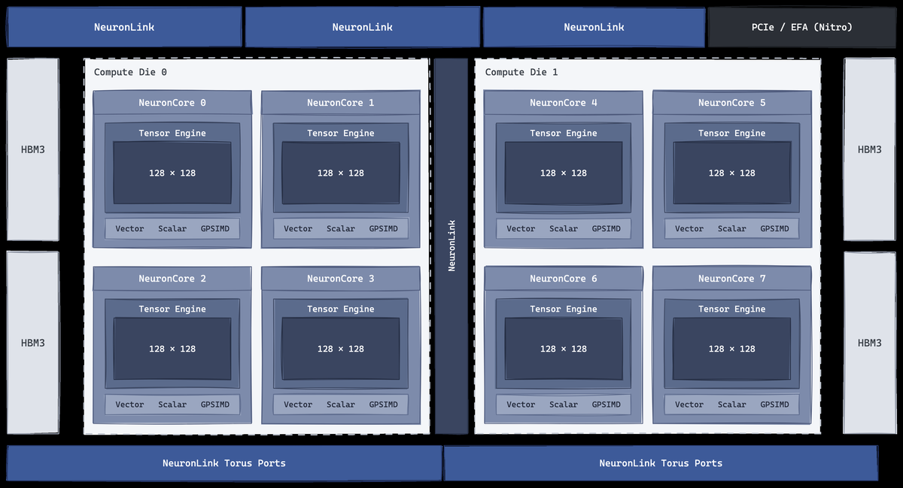
架构：Trainium芯片带*少量* NeuronCore（Trn1 2、Trn2/Trn3 8），每个NeuronCore不是单一单片matmul引擎而是解耦专用引擎的cluster：Tensor Engine（128×128 systolic array）、Vector Engine做归约、Scalar Engine做pointwise、可编程GPSIMD Engine（八个512-bit向量处理器）装其余。周围是数据搬运者：128个DMA引擎、Sync Engine序列化传输、（Trn2起）专用CC-Cores做collectives。无warp无wavefront；引擎跑成静态调度dataflow流水线。
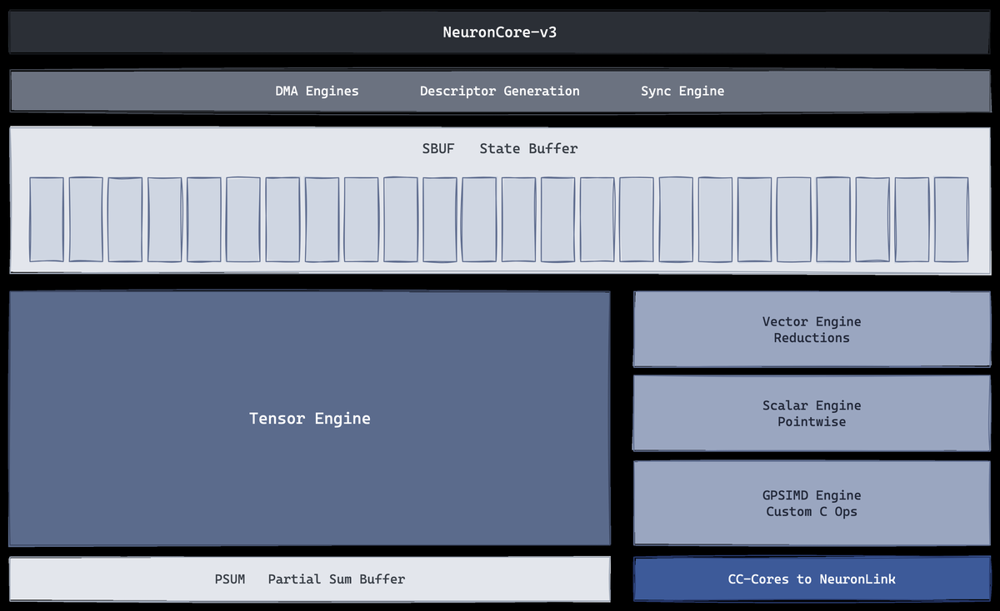
Compute：Tensor Engine拥有matmul FLOPs；128×128 PE网格（16,384 MACs）weight-stationary：一个操作数块加载进阵列并保持（LoadStationary），另一个流过它（MultiplyMoving），部分和落进PSUM小累加器SRAM。与每个matmul加速器核心的D=A·B+C tile MMA相同；但NVIDIA把它包进warp层级、Google从VLIW bundle发射，Trainium把它暴露为一对对着命名scratchpad的显式指令。
阵列物理固定128×128跨三代；变的是每cell装多少积。Trn1 v2跑BF16/FP16+FP32累加，FP8仅BF16速率（无加速）。Trn2 v3双泵FP8呈现有效256×128阵列（首个真2× 在8-bit）。Trn3 v4打包microscaling操作数呈现有效512×128 4× BF16速率。物理乘加单元数永不动；数据路径只是喂更窄数字。
其他三个引擎保持阵列忙碌：Vector做跨元素归约（layernorm、softmax、pooling）；Scalar做一对一pointwise（激活、GELU）；GPSIMD吸收映射不到任何一个的。编译良好的step重叠全部四个。设计在层干净分解到四引擎类型时兑现：transformer大致如此。边缘交税：不适合任何专用引擎的算子落到可编程GPSIMD路径，更慢：Trainium版的长尾成本。
Memory：三个层级全软件管理无硬件缓存。AWS自己的文档强调NeuronCore无缓存，「所有内存移动在程序本身显式」。片外HBM（Trn1 32GB、Trn2 96GB HBM3、Trn3 144GB HBM3e）。片上最近引擎的是State Buffer（SBUF）：主scratchpad，约20× HBM带宽，128 partition组织，per NeuronCore 24MiB（v2）、28MiB（v3）、32MiB（v4）。阵列与SBUF之间PSUM 2MiB累加器。数据移动HBM→SBUF→Tensor Engine→PSUM→SBUF，每跳编译器发出；硬件不预取不逐出。
Numerics：可配置FP8：Tensor Engine接受可调指数偏置，支持E5M2、E4M3、E3M4，让编译器逐tensor换range换精度。Trn3的FP4买不到额外吞吐：OCP MXFP4操作数上转成MXFP8才到阵列，FP4以FP8速率跑只省内存带宽不省计算。两个世代都靠行业精度恢复技巧：Trn3起microscaling块指数、每代硬件stochastic rounding。要怀疑的数字是稀疏峰值：AWS头条4× FP8，其架构页放2× over稠密FP8（4× 相对稠密BF16），营销加速和datapath不完全一致。
Collectives in Silicon：无GPU干净对等物的块是collective-communication core。分布式训练和推理在collectives花大量wall-clock：每梯度步all-reduce、每MoE层all-to-all。GPU上那些collectives跑成同做数学的SM上的NCCL kernel，通信和计算争同一硅。Trainium把它切进专用硬件：每Trn2芯片20个CC-Cores，直连NeuronLink端口，Tensor和Vector引擎继续跑时执行all-reduce、all-gather、reduce-scatter、all-to-all。与Google对SparseCore和Cerebras对off-core zero filter同一手：找主引擎形状不对的负载，花一点面积在旁建目的专用块。
Scale-up：NeuronLink：Trn2芯片连成torus，正是TPU的选择：单trn2实例16芯片4×4 2D torus约1.28 TB/s per chip；Trn2 UltraServer四个实例64芯片4×4×4 3D torus，呈现83 dense FP8 PetaFLOPS和约6TB HBM单一scale-up域。torus的特征权衡：便宜布线、巨大最近邻带宽，代价是跨diameter多跳。AWS把64芯片UltraServer对位NVIDIA 72 GPU NVL72；聚合计算同级，但torus不是crossbar。
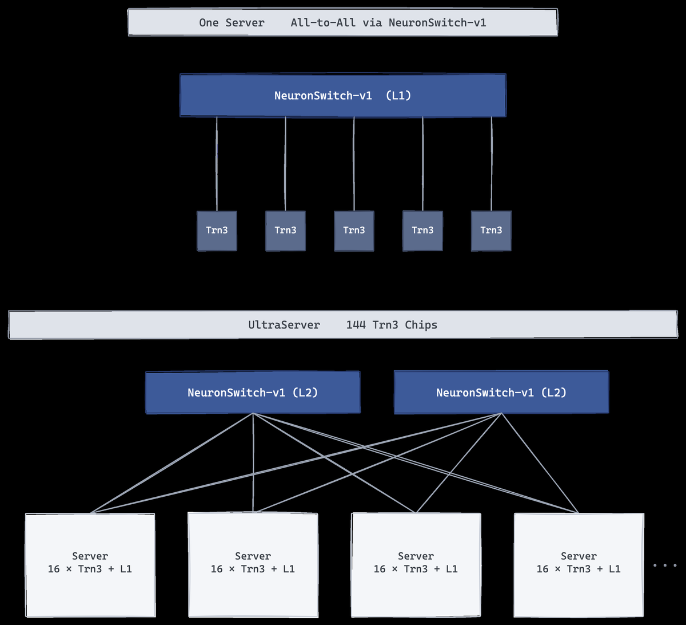
Trn3放弃torus。NeuronSwitch-v1是switched all-to-all fabric，约翻倍inter-chip带宽并压平diameter让任何芯片一跳达任何其他。Trn3 UltraServer到144芯片、362 dense FP8 PetaFLOPS、20.7TB HBM3e。动机是推动Google走向MoE推理高radix拓扑的那个：expert routing是all-to-all，torus最坏情形。Trainium的互连路线图是行业压缩重演：负载最近邻时用torus，不是时换crossbar。
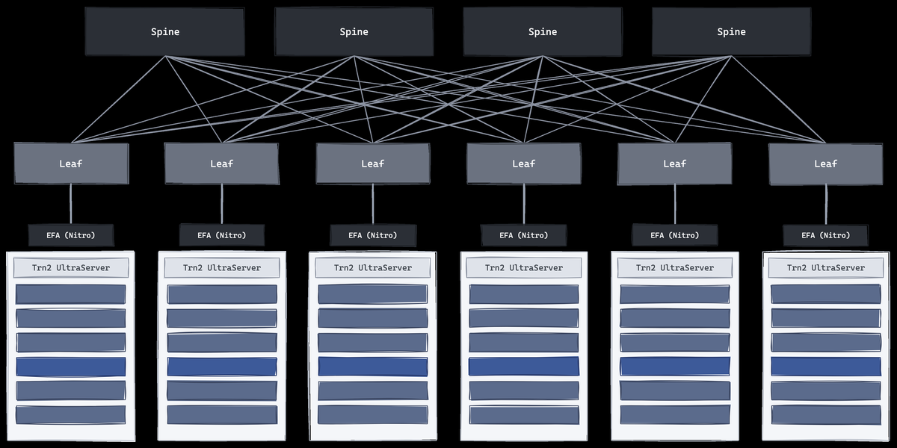
Scale-out：不是定制；是AWS已在跑的同fabric。每个Trainium实例带Elastic Fabric Adapter（EFA）NIC进数据中心网络（Trn2实例3.2 Tbps），传输是SRD（Scalable Reliable Datagram），卸载到Nitro卡而非跑在加速器。SRD是AWS对RDMA的clean-sheet答案：代替RoCE/InfiniBand的单一有序流，它把每条消息喷到最多64条并行路径、可靠但乱序投递，把重组推到collective库，绕过单拥塞路径的head-of-line blocking。顶部是UltraCluster，由10p10u网络（约10 Pb/s带宽<10 微秒延迟）缝接，扩展到数十万芯片。证明点是 Project Rainier：约五十万Trainium2芯片跨多个美国数据中心，2025末为Anthropic上线；到2026初Claude跑在超一百万芯片：任何外部实验室对非NVIDIA训练平台的最大承诺。
软件：Neuron SDK：Trainium软件让借用显式：Neuron SDK是建在同OpenXLA基础的compiler-first栈。Neuron编译器（neuronx-cc）摄入XLA HLO图降低成NEFF二进制，Neuron runtime加载到NeuronCores；前端IR是Google的。torch-neuronx经PyTorch/XLA的LazyTensor trace跑PyTorch；jax-neuronx经StableHLO降低JAX。spectrum从一端kernel-driven CUDA到另一端whole-program XLA，Trainium几乎坐在TPU顶上：编译器是系统，且基本是同一编译器。
分叉处是逃生舱。Neuron发NKI（Neuron Kernel Interface）：Python tile级kernel语言暴露四引擎和SBUF/PSUM scratchpad。它是Trainium的Pallas（或Triton）：tile DSL在kernel赢在调度而非代数时降到whole-program编译器之下。下方collective-communication库把all-reduce/all-to-all映射到CC-Cores和NeuronLink拓扑（NCCL对等物）。
对CUDA（甚至TPU栈）的差距是成熟度不是设计。NKI、JAX路径、分布式库2024末前都还在beta；移植模型只在AWS跑无跨厂商回退；vLLM后端落后upstream。最清楚的tell是锚租户怎么工作：Anthropic不简单经PyTorch瞄准Trainium：它内嵌进Annapurna、写自己的低层NKI kernel、把修复upstream进Neuron栈。Trainium在前沿生产可行，但前沿是co-engineered不是turnkey：编译器继承且优秀，周围生态年轻。
Groq LPU是确定性机器。每个其他芯片花硅容忍不确定性：缓存藏内存延迟、scheduler填停顿、arbiter解决无法预测的争用。LPU删掉全部。剥掉每个反应式组件（无缓存、无分支预测器、无arbiter、无重排缓冲、甚至无片上crossbar），把整个调度问题交给编译器，它在精确周期上放置每条指令和每个字节。留下的是延迟在跑前已知的芯片。TPU把调度移进编译器但保留HBM和动态网络；Groq移除最后的不确定性源：内存全是SRAM，网络也调度，数百芯片作为单一clock-exact程序运行。
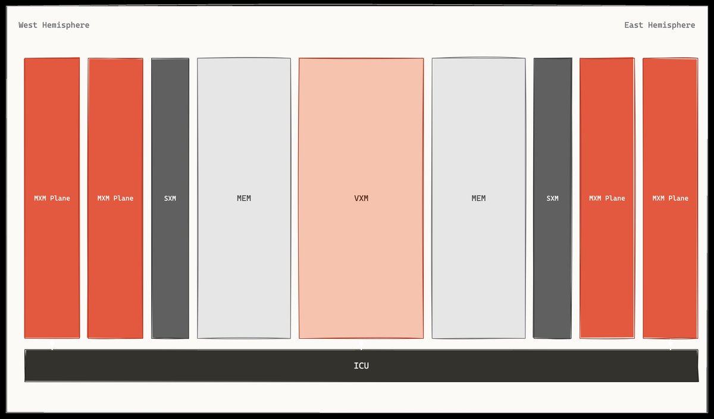
架构：其余领域由复制core构建：在die上平铺SM/TensorCore/CU/dataflow core再把工作分给副本。LPU反向构建。它拿单个常规core拆开：指令控制、向量ALU、矩阵单元、内存、网络各成为functional slice：整高列相同硬件：列并排站过die。每slice内同质、跨芯片异构。数据不坐在寄存器文件里等发射到单元；它流过slices像流水线上零件，East和West，每周期一跳寄存器，VLIW指令从控制slice向北发出接它。数据路径中无反应：编译器知道每周期每个操作数在哪，硬件只是转时钟。这个设计以Tensor Streaming Processor（TSP）出道，2024年更名Language Processing Unit。
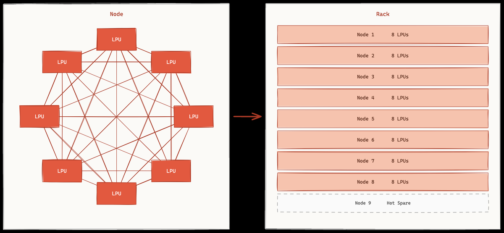
Compute：MXM矩阵路径：四个独立320×320乘加平面（每半球两个），共409,600乘法器，INT8或FP16操作数进INT32或FP32累加器。权重跨平面安装（40周期内全装），然后激活流过积累积。900 MHz约750 INT8 TOPS和188 FP16 TFLOPS，且异常地数字无稀疏星号：TSP完全拒绝跳零，因为数据依赖跳过会让执行时间数据依赖，而确定性是它不肯交易的唯一属性。VXM向量路径在die中央：每lane 16 ALU排4×4网格，5,120个32-bit ALU，跑激活、归一化、量化、残差加。因为计算是*空间*的而非发射到共享单元，操作数可在连续周期走过VXM ALU链直接进MXM平面不碰内存：GPU kernel手工建的算子融合这里只是slice的物理顺序。第三slice类型SXM处理直线流表达不了的移动：lane移位、320-lane permute、转置、chip-to-chip链接。
Memory：无HBM、无DRAM、无缓存。片上MEM slices：88 slice（每半球44）230MB SRAM，每字节距计算slice一周期，约80 TB/s聚合。整层就这：一层、平、软件寻址。
后果是架构的定义性约束。230MB装不下模型。Llama-2 70B FP16是140GB，必须跨数百芯片分片，权重摊到整机架或更多的聚合SRAM：部署配置约576 LPU。GPU把模型停在handful封装的HBM里、token流过它；LPU把模型摊在cluster的SRAM、token流经cluster。芯片数由容量而非计算设定：权重必须装下。与Cerebras同权衡（纯SRAM无HBM），反向到达：Cerebras保留一片巨大die放弃每wafer容量；Groq保留常规尺寸die放弃把模型装在一颗上。
Numerics：TruePoint：TSP停在FP16和INT8 + FP32累加，从不发FP8/FP4。其一个数值想法是TruePoint：320元素点积融合成单舍入步 + FP32累加，让FP16乘法阵列在归约上接近FP32精度（Groq报相对FP32 baseline约0.05% 最大误差）。是否16-bit是信念还是从未得到低精度刷新的datapath，难与第二代芯片从未出货的事实分开。SRAM容量是架构最稀缺资源，8-bit权重会减半芯片数：这台容量饥渴机器每个理由想要FP8却没在硅上得到。
Determinism：每个其他加速器藏延迟；LPU暴露它。ISA携带每条指令的执行延迟，数据路径按构造固定延迟，编译器提前算出每个结果出现的精确周期。硬件里无物能扰动调度：无缓存可错、无arbiter可停、无分支可误预测、无投机可回卷。Groq自己的测量是证明：24,240次BERT-Large运行落在约75 µs带内，编译器预测延迟在实测2% 内。这是TPU直觉（把调度移进编译器、删掉第二猜它的硬件）更进一步。TPU编译器调度一颗芯片；LPU编译器调度一个*系统*，因为确定性跨网络也成立。且它恰是Cerebras的逆：Cerebras core是dataflow，操作数到达即触发；WSE对数据反应，LPU对时钟定时。两机都删scheduler；一个用到达替代，一个用时钟。
Scale-up：节点是8 LPU全连接：每芯片7个链接接其他七颗，节点内每芯片距任何其他一跳。剩余四链接（跨节点32个）捆成ISCA论文所称的32-port虚拟路由器，节点进更大fabric的上行链路。无baseboard switch无连贯地址空间；远程操作数不加载而是*被调度*到达。
Scale-out：节点外，节点连成Dragonfly：9节点成72芯片机架（第九个热备，所以64活跃），拓扑到规定10,440芯片任何两颗六跳内。fabric软件调度：路由和流控移到编译时，论文框架直白：*scheduled, not routed*。无back-pressure无动态仲裁，因为编译器已证明接收器就绪；链接带前向纠错替代重传，因为重试会扰动调度。让机架里独立时钟芯片保持lockstep是自己的问题：链接是plesiochronous，fabric用Hardware-Aligned Counters每256周期跨生成树交换维护全局共识时间，周期deskew指令把每颗芯片停回对齐。Groq报8-way all-reduce在大tensor上匹配A100/NVSwitch节点、小tensor上打败：调度fabric不付动态fabric的握手延迟。
成本写在内存赌的物理里。模型副本不是盒子是机架（或八个）：Llama-2 70B约576芯片，按一分析带144个host CPU和144TB host RAM旁LPU，对比8-GPU server的两颗CPU。每芯片wafer便宜（14nm GlobalFoundries，据报<$6k，对比 H100 级部件约 $16k），但要数百颗，decode 期间巨大计算大多闲置。SemiAnalysis 直说：LPU 优化延迟时赢每 token BOM，batch 后吞吐 per dollar 输 GPU 约一个数量级。架构不拼成本，拼速度。
软件：编程模型是「编译器即机器」最纯粹表达。无kernel。你把PyTorch/TensorFlow/ONNX模型交给Groq编译器；它降低成小tensor操作集并静态调度每条指令、每个流、每chip-to-chip传输。没人写wgmma或手调tile，因为没有可手调的动态硬件。Groq的展示是四天带十人内bring up LLaMA，对比同模型在GPU上手调kernel的数月。栈（profiler、runtime、GroqFlow bring-up路径）小而封闭；GroqFlow 2025归档，公司停止卖卡开始卖token。
那个转向是架构为谁服务的tell。LPU按构造纯推理（Ross的框架：训练是本地游戏，推理是全局游戏），在单一事上无败：单用户decode延迟。独立测量背书，Artificial Analysis把Groq放在开放模型最快per-token提供商之列。其余匹配很差：装不进机架SRAM的模型、要大批次求吞吐per dollar的负载、静态调度表达不了的动态控制流。
结局：买家是NVIDIA。2025年12月NVIDIA拿LPU技术非排他许可并雇Ross和大部分团队。不是收购：无产品、客户合同或股权易手（NVIDIA 10-K自己说的），虽然约 $13B结款让媒体称其为收购。GTC 2026技术以NVIDIA Groq 3 LPU重现：256颗SRAM-only推理芯片的机架，坐在Rubin NVL72旁把transformer在两者间拆分：GPU跑attention，LPU跑feed-forward和MoE层，Dynamo编排交接。AI最确定的架构最终成了最可编程架构内部的延迟协处理器。GroqCloud与此同时仍在原14nm硅上服务token。
所有算术数字是指定精度下的峰值；条目稠密除非厂商不发布基础。内存带宽是所示原生层级：GPU、TPU、Trainium是HBM；Cerebras和Groq是片上SRAM聚合。那些数字不直接可比。Scale-up带宽遵循各厂商惯例，可指per-chip聚合、机架聚合或真bisection。
各厂商旗舰芯片一览（年份、芯片、加速器内存、内存带宽、旗舰稠密FLOPs、TDP、scale-up带宽）：NVIDIA H100 80GB HBM3 / 3.4 TB/s / 1.98 PetaFLOPS FP8 / 700W / 900 GB/s；H200 141GB HBM3e / 4.8 TB/s；B200 192GB HBM3e / 8 TB/s / 4.5 PetaFLOPS FP8 + 9 FP4 / 1,000W / 1.8 TB/s；B300 288GB / 8 TB/s / 7.5 FP8 + 15 FP4 / 1,400W；Rubin 288GB HBM4* / ~13 TB/s* / ~17 FP8 + ~50 FP4* / ~1,500W* / 3.6 TB/s；Rubin Ultra 1TB HBM4e* / ~32 TB/s* / ~33 FP8 + ~100 FP4* / ~1,800W*。
Google TPU v5p 95GB HBM2e / 2.8 TB/s / 0.46 PetaFLOPS BF16 / 1.2 TB/s；Ironwood 192GB HBM3e / 7.4 TB/s / 4.6 PetaFLOPS FP8；v8t Sunfish 216GB HBM3e / 6.5 TB/s / 12.6 PetaFLOPS FP4。AMD MI300X 192GB HBM3 / 5.3 TB/s / 2.6 PetaFLOPS FP8 / 750W / 896 GB/s；MI325X 256GB / 6.0 TB/s；MI355X 288GB HBM3e / 8 TB/s / 10 FP8 + 20 FP4 / 1,400W / 1,075 GB/s；MI455X待定 / ~40 PetaFLOPS FP4*。
Cerebras WSE-2 40GB SRAM / 20 PB/s aggregate / 7.5 PetaFLOPS FP16 / 23kW；WSE-3 44GB / 21 PB/s / ~15.8 FP16*。AWS Trainium1 32GB HBM2e* / 820 GB/s / 0.19 PetaFLOPS BF16/FP8；Trainium2 96GB HBM3 / 2.9 TB/s / 1.3 PetaFLOPS FP8 / ~500W* / 1.28 TB/s；Trainium3 144GB HBM3e / 4.9 TB/s / 2.5 PetaFLOPS FP8。Groq GroqChip 230MB SRAM / 80 TB/s on-chip / 0.188 PetaFLOPS FP16 / 215W / 330 GB/s；NVIDIA Groq 3 LP30 500MB SRAM / 150 TB/s / ~1.2 PetaFLOPS FP8* / 2.5 TB/s。
*标记分析师推导、时代推断或厂商聚合推导数字；n/d标记厂商未披露规格。
机架级系统一览（公司、年份、系统、芯片数、聚合稠密FLOPs、加速器内存总量、scale-up fabric带宽、per-chip NIC、功率、冷却）：NVIDIA HGX H100 8芯片16 PetaFLOPS FP8 / 640GB / 7.2 TB/s / 400Gbps / ~10kW空冷；GB200 NVL72 72芯片360 FP8+720 FP4 / 13.4TB / 130 TB/s / 800Gbps / ~120kW液冷；GB300 NVL72 540 FP8+1,100 FP4 / 20.7TB；NVL144 144芯片 ~1.2 ExaFLOPS FP8+~3.6 FP4 / ~21TB / ~260 TB/s* / 1.6Tbps / ~200kW*；NVL576 Kyber 576芯片 ~5 FP8+~15 FP4 / ~144TB / 1.6Tbps / ~600kW*。
Google TPU v5p pod 8,960芯片4.1 ExaFLOPS BF16 / 852TB / 3D torus；Ironwood pod 9,216芯片42.5 ExaFLOPS FP8 / 1.77PB / optical OCS / ~10MW*；v8t Sunfish pod 9,600芯片121 ExaFLOPS FP4 / ~2PB / Boardfly / optical OCS。AMD MI300X 8-GPU OAM 21 PetaFLOPS FP8 / 1.5TB / 7.2 TB/s / 400Gbps / ~10kW空冷；MI355X 80 FP8+160 FP4 / 2.3TB / 8.6 TB/s / ~16kW* 液冷；Helios MI455X 72芯片1.4 ExaFLOPS FP8+2.9 FP4 / 31TB / 260 TB/s / 液冷。
Cerebras Condor Galaxy 3 64 wafers ~1 ExaFLOPS FP16* / 2.8TB SRAM+MemoryX / Ethernet tree / 1.2 Tb/s / ~1.5MW* 液冷。AWS Trn1 16芯片3 PetaFLOPS BF16 / 512GB / 2D torus / ~50Gbps EFA / 空冷；Trn2 UltraServer 64芯片83 FP8 / 6.1TB / 3D torus / 200Gbps EFAv3；Trn3 UltraServer 144芯片362 FP8 / 20.7TB / NeuronSwitch / 液冷。Groq GroqRack 64活跃12 PetaFLOPS FP16 / 14GB SRAM / 3.2 TB/s bisection / RealScale / 空冷；NVIDIA Groq 3 LPX 256芯片315 FP8 / 128GB SRAM+12TB DDR5 / 640 TB/s aggregate C2C / 液冷。
两个表格合起来讲的故事：NVIDIA靠scale-up域内封装的密度（NVL72/576把130-260 TB/s的连贯域塞进液冷机架）；TPU靠pod级OCS光交换（9,600芯片121 ExaFLOPS单一域）；AMD用开放标准追（UALink/UEC）；Cerebras和Groq用SRAM换每token延迟；Trainium靠AWS端到端价格。
参考：https://www.jacobpeake.com/ai-chip-architectures